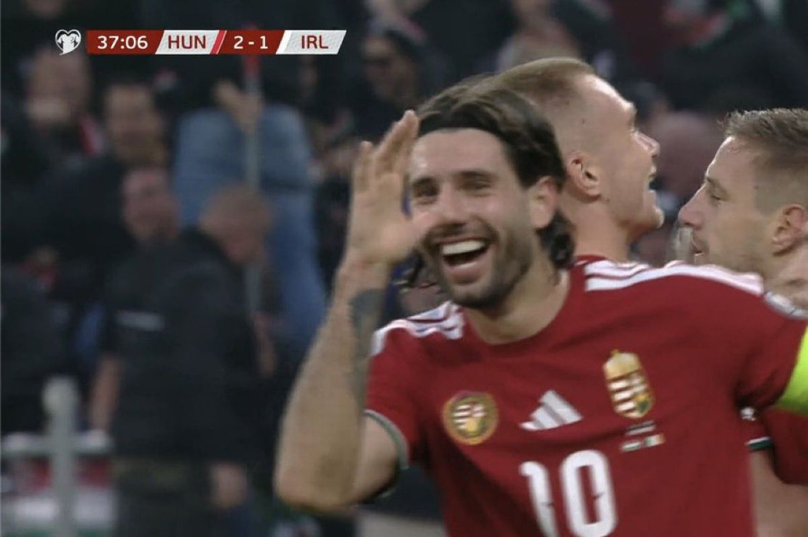

Liverpool midfielder Dominik Szoboszlai hit back at critics, clarifying that his recent controversial remarks about the World Cup were meant as a joke. The comments, made in a lighthearted interview, were taken out of context, leading to a brief social media storm. Fans quickly rallied behind him, praising his honesty and sense of humor.
